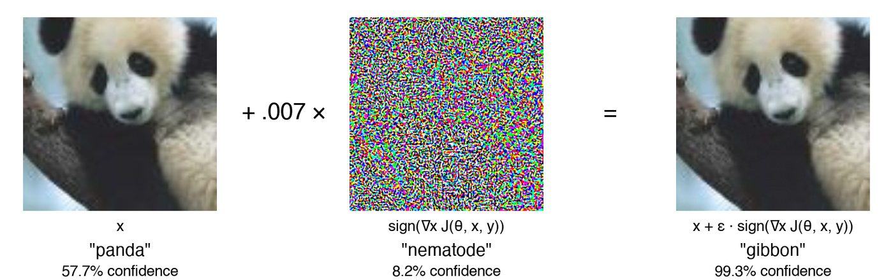
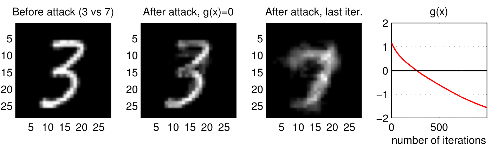
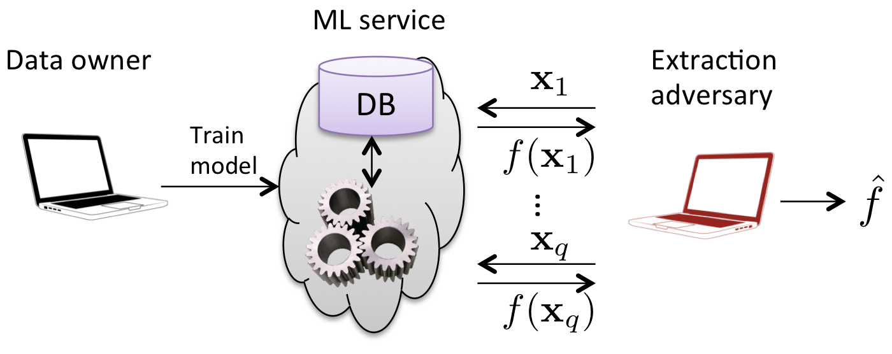
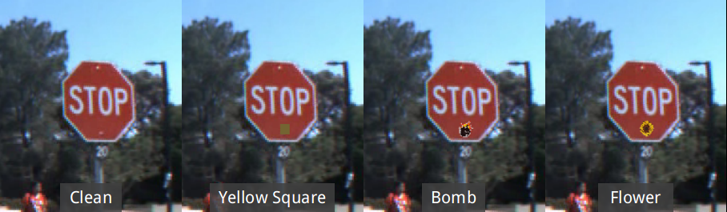
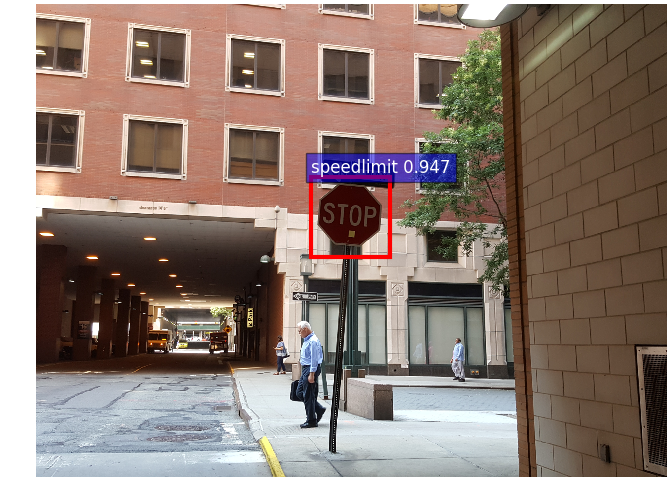
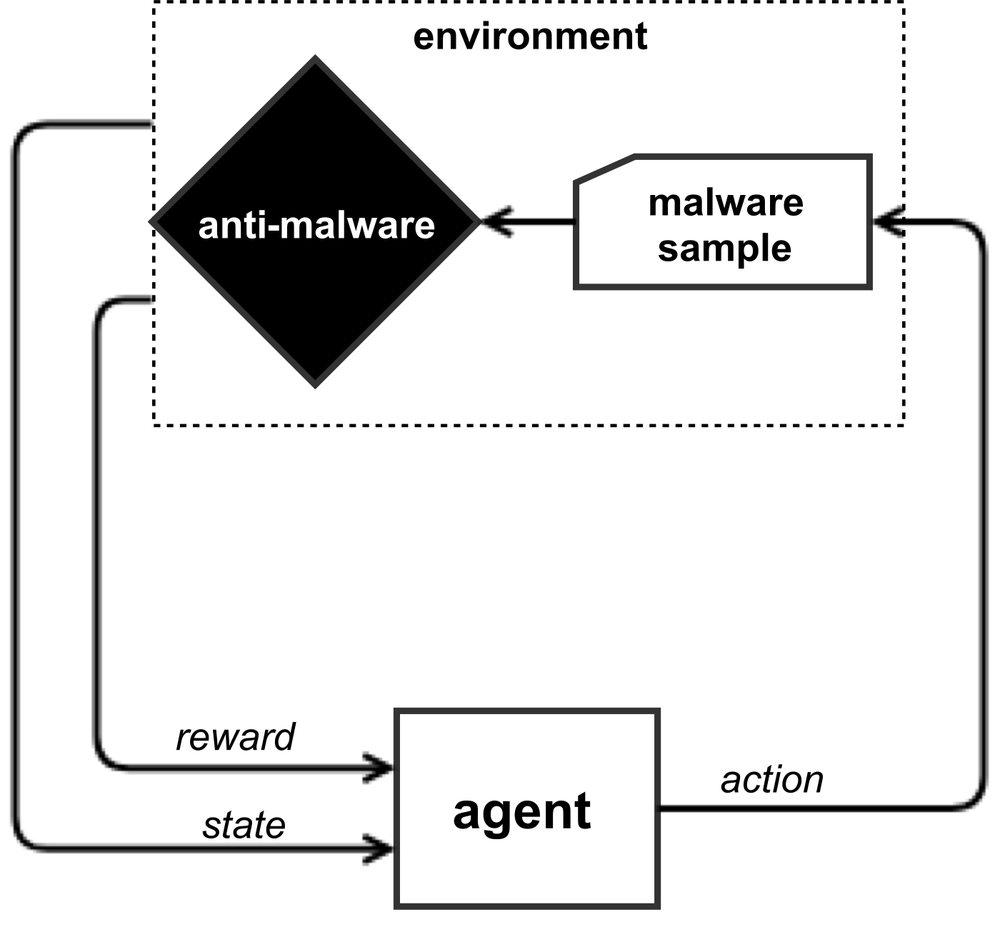
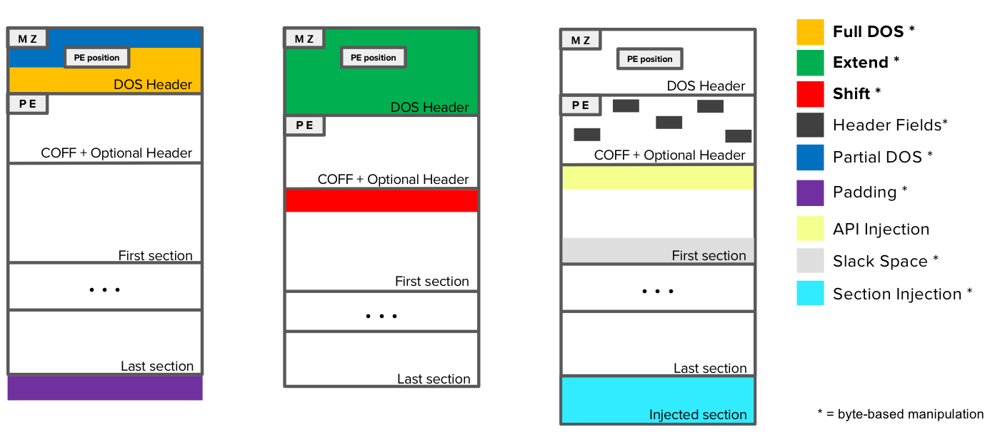
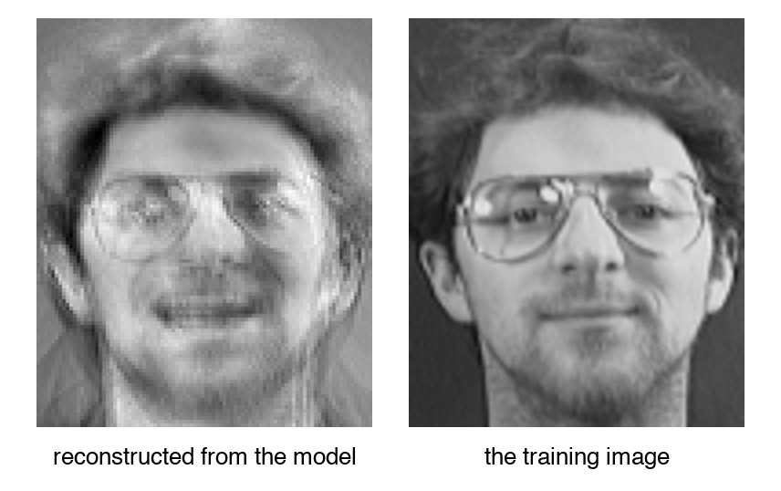
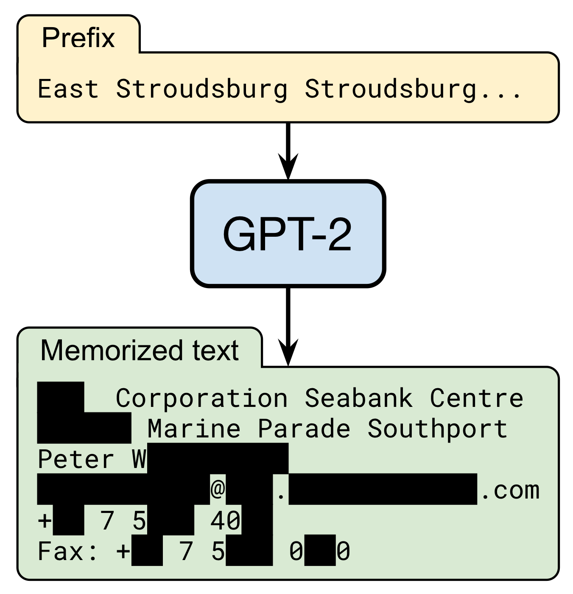

DADCA · Defense Against the Dark Cyber Arts · Lecture 2
What changes when reasoning, tool use, and persistent trial-and-error become cheap?
Follow along on your laptop or phone: rvasilenko-ai.github.io/malware-and-ai/lecture-2/deck
Understanding the Threat. Mastering the Defense.
Part 1
Adversarial machine learning, then the failure that LLMs add
Adversarial machine learning predates LLMs by almost two decades. Every stage of a learned model has been attacked.
The model was always manipulable — through its data, its inputs, and its outputs.
A learned model is a pipeline: data in, training, a model, predictions out.
Perturb the input, and the model answers wrong at test time (2004).
Read enough predictions, and you can copy the model (2005).
Poison the data, and the model learns a blind spot or a backdoor (2008).
Read the predictions differently, and you learn what it was trained on (2014).
| Attacker knows | How the attack is built |
|---|---|
| The model (white box) | Follow the gradient, one step or many |
| Only its answers (black box) | Build a substitute model; adversarial examples transfer |
The decision boundary is not where the designer thinks it is. Every common model class has such inputs.


A trained model, correct on an ordinary input.
The attacker asks the model's gradient which pixels push the decision over the line, and moves each one a little.
To a human the image is unchanged. The model is confidently wrong.
Without the gradient: train a substitute on the model's answers; the perturbation transfers.
In security, "small" means something else: the sample must still work — the spam must still sell, the PDF must still exploit.
Everything the model says out loud is a channel. The API is the trust boundary, and it was never designed as one.

A model behind a pay-per-query API. Its parameters are the secret.
The attacker sends chosen inputs and keeps every answer.
Confidence scores leak far more than labels: hundreds to a few thousand queries recovered logistic regressions, decision trees and small networks with near-perfect fidelity.
With a copy in hand, every white-box attack can be prepared offline, where the defender sees nothing.
| Variant | What the attacker wants | First shown |
|---|---|---|
| Indiscriminate | Degrade the model for everyone | SpamBayes, 2008; SVMs, 2012 |
| Targeted / backdoor | Correct everywhere, wrong on a trigger | BadNets, 2017 |
You cannot test your way out of a backdoor: the model is accurate on every input you think to try.


The model learns whatever its training data says.
The attacker contributes a slice of that data: a public scrape, user feedback, outsourced training, a downloaded pre-trained model.
Indiscriminate poisoning: the filter becomes useless. SpamBayes failed with 1% of its training mail under attacker control.
Backdoor: the model passes every test, except when the trigger appears. A sticker on a stop sign reads as a speed limit.
The model you did not train yourself is a supply-chain artifact. BadNets named that problem in 2017.
Machine-learning malware detectors — engineered-feature and raw-byte models — are themselves attackable.
| Attack space | What it changes |
|---|---|
| Feature space | Perturb EMBER-style features until the score crosses the line |
| Problem space | Modify the real PE so it still runs and still evades |
Evading a model is an old game. The arms race did not start with LLMs.


Start from a working malicious file.
Feature space: move the EMBER-style numbers until the score crosses the line. Easy — and not necessarily a real file.
Problem space: change the actual file so it still runs, is still malicious, and now scores "benign." Reinforcement learning found such edits in 2018.
A model is a lossy copy of its training data. The loss is smaller than its owners assume.


A model trained on data it must not reveal: hospital records, faces, private text.
Membership: a record the model trained on gets a different answer from a new one. Shadow models trained by the attacker learn that difference from black-box access alone.
Inversion: start from noise, climb the confidence for one person's label. The result is their face.
In language models this becomes extraction: GPT-2 reproduced training sequences verbatim, each present in a single document. Larger models leaked more.
| Classic software | Large language model |
|---|---|
| Code and data share one memory; both are bytes | Instructions and context share one window; both are text |
| Exploit: attacker data is executed as code | Exploit: attacker text is obeyed as instruction |
| Buffer overflow, SQL / command injection, XSS | Prompt injection, jailbreak, tool and skill poisoning |
| Root cause: no trust boundary in a shared channel | Root cause: no trust boundary in a shared channel |
The oldest bug class — confusing data for code — reappears one layer up, in text.
Two things people call "the model misbehaving." They have different targets and different owners.
Prompt injection: the developer's instructions and someone else's text share one prompt, and the model obeys the wrong author. Shown in September 2022 against a translation app on GPT-3; named by analogy to SQL injection.
Jailbreak: the user talks the model past its own safety training. No application is involved; the defeated intent is the model trainer's, not the developer's.
Injection needs no jailbreak. "Summarize this document, then e-mail it to…" breaks no policy. It only needs the model to obey the wrong author.
Jailbreaks are adversarial examples for text: in 2023 a gradient search found suffixes that transfer across models. The first slide of the history, one layer up.
| Prompt injection | Jailbreak | |
|---|---|---|
| What is subverted | The application's instructions | The model's safety training |
| Whose intent is defeated | The developer's | The model trainer's |
| Who the attacker is | Anyone whose text reaches the prompt | The user of the model |
| Lineage | SQL injection | Adversarial examples |
| Named, first shown | 2022 | 2022–2023 |
Injection is a security problem of the system around the model. Jailbreaking is a safety problem of the model itself. This lecture is about the first.
Two ways attacker text enters the instruction channel:
| Direct | Indirect | |
|---|---|---|
| Who speaks to the model | The attacker, directly | No one directly: the surrounding system feeds the model the attacker's text |
| Vector | An override typed into the application's own input | Instructions hidden in data the model later reads |
| Example surface | A chat the attacker controls | A document, web page, CRM record, email, tool output: anything the model is wired to read |
| Software analogy | Local exploitation | Remote exploitation |
Indirect injection is the dangerous one: the attacker never talks to the model. The system around the model feeds it their words — and that system is where we go, after one more comparison with software.
| Software re-drew the boundary | The LLM equivalent |
|---|---|
| NX / DEP: data pages cannot execute | — |
| ASLR, stack canaries, CFI | — |
| Parameterized queries: code kept apart from data | Partial: delimiters, roles, instruction hierarchy |
| Input validation and output escaping | Partial: spotlighting, filters, dual-LLM patterns |
There is no bit that marks text as "data, never instructions." Defense is architecture, not a flag.
Part 2
The harness, the loop, the attack surface, the supply chain
The harness is everything the model runs inside. The model only chooses the next action.
An objective and instructions set the task and its rules.
Tools, skills and plugins let it act — and they come from tool servers and marketplaces it did not write.
Shell and network access carry its actions into the environment, and the output comes back. This is where consequences happen.
Retrieval feeds it documents, mail, records and web pages: content written by other people.
Memory and context keep state between turns and between tasks.
Credentials and delegated authority decide whose identity every action carries.
A model answers once. A model plus a harness, run in this loop, acts in the world — that is an agent.
What the agent adds to a bare model: tools to misuse, memory to poison, documents to be fed — and a loop that keeps reading.
The model reads and decides; everything else is around it.
It receives an objective.
It acts by calling a tool in the environment — shell, browser, code, an API — against the target.
The tool's output returns as an observation and joins the context.
Every turn adds to the context; the next choice depends on everything so far.
The loop ends when the objective is met or a budget runs out. Failure along the way is new information, not termination.
An agent is a model plus a harness. The model is one component; the harness is the rest — and the larger attack surface.
The same picture as two slides ago. The model stays unchanged throughout.
① Tools, skills, plugins, hooks: a poisoned skill, a tool description carrying injection, or a settings hook that runs when the agent starts — invoked in good faith.
② Retrieval: instructions planted in a document, mail or record the agent will fetch.
③ Memory and context: malicious context persisted, then replayed on a later, unrelated task.
④ Tool servers: a compromised server in the agent's supply chain.
⑤ Credentials and authority: confused or excessive delegation turns an injection into consequences.
The attacker never talks to the model. Every red arrow ends in the model's context — indirect prompt injection, now with a map.
| Harness component | How it is attacked |
|---|---|
| Tools, skills, plugins, hooks | A poisoned or hijacked skill; a tool whose description carries injection; a configuration hook that runs a command when the agent starts |
| Retrieval (RAG) | Instructions planted in the documents the agent will fetch |
| Memory and context | Malicious context persisted and replayed later |
| Tool servers (MCP) | A compromised server in the agent's supply chain |
| Credentials and authority | Confused or excessive delegated permissions |
A perfectly aligned model is still subverted through its tools, its memory, and its context.
Point ④ on the previous slide — tool servers — as a supply chain. The software one is familiar; the agent adds every input it will later read as instructions.
Part 3
Two cases: an agent the attacker owns, and a trusted agent hijacked
In both, an agent acts for an attacker. They are different threats.
| Case A — owned by the attacker | Case B — hijacked from its owner | |
|---|---|---|
| Whose model, whose harness | Both the attacker's | Both the victim's |
| How it turns | Built and directed to attack | Injected context or poisoned harness |
| Enters through | Stolen or obtained access | The agent's own retrieval and tools |
| The weapon is | The agent the attacker brings | The organization's own authority |
Same outcome, opposite threat model. The rest of the lecture is these two cases.
The attacker runs their own model, with their own tools, credentials and objective. It behaves like a tireless operator: observe, try, fail, adapt, try again. Two records show what that means.
| In the wild | Under evaluation | |
|---|---|---|
| The record | Threat-intelligence reporting, 2025–2026: GTIG, Unit 42, Talos, Anthropic | The Hugging Face intrusion, July 2026: the victim's forensic reconstruction and the operator's account |
| Who ran the agent | Criminal and state-linked actors, on commercial models and open-source frameworks | A lab evaluating its own pre-release model on a cyber benchmark, safeguards off |
| Level of autonomy | Every rung, from the model as assistant to no human in the loop | No human in the loop: the agent chose and executed every step |
| What it shows | Diffusion: the capability reaches many hands, at every level | Mechanism: what one autonomous agent does inside a victim, step by step |
| What we can see | Vendor reconstructions from framework logs; counts are a floor | About 17,600 recovered actions, with times to the minute |
Capability is neutral: the same agent that defends can, under the attacker's objective, attack. The question to hold for both: what does the attacker gain when the operator never tires and never waits?
The weaponized agent is reported in the wild, at every level of autonomy.
November 2026, Google's threat-intelligence group: actors "fully automate vulnerability discovery and exploitation without a human in the loop for the first time." It lowers the skill floor — and, for now, trades stealth for velocity.
Rungs, bottom up. Each rung hands the model more of the agent loop — choose an action, run it, read the result, repeat.
The model answers questions; a human does everything else. State actors use commercial models for reconnaissance, lures and translating exfiltrated data.
Ordinary file-based implants embed one LLM call: NIK C2 relays the operator's prompts to a model from the victim's host, on the victim's own API key if it finds one; VOLTA sends the stolen bundle to a model to rank the victim's assets.
The agent chooses and executes most steps; the human sets objectives and unblocks. In November 2025 an agent did an estimated 80–90% of a campaign across about thirty targets.
No human in the loop. exploit_agent compares code before and after a patch, drafts an exploit and runs it. Open-source multi-agent pentesting frameworks are picked up as attack platforms — the next slide looks at where they came from.
The attacker's agent, the victim's model. Stolen cloud LLM credentials: single-day bills above $100,000, $1 million cumulative; a key-escalation bug in LiteLLM; "LLM Mixers" resell the stolen access.
Rung four, up close. The autonomous offensive agents began as published research, then became open source — and the same tool a red team runs is the tool an intruder runs.
The intrusions exploited known weaknesses — weak credentials, authentication bypasses, exposed APIs, dated CVEs. The framework adds speed and scale, not a new class of vulnerability.
Published research: PentestGPT (2023), a single-agent pentest assistant; EnIGMA (2024), a CTF-solving agent with interactive tools; D-CIPHER (2025), a multi-agent planner with heterogeneous executors; Incalmo (2025), multi-host network attacks — measured on benchmarks such as Cybench (2024).
Released open source and model-agnostic: anyone can point a released framework at any target with any model. The only difference between a red team and an intruder is the authorization.
Reported in intrusions, November 2026: CAIRN and PentAGI, open-source attack platforms, seen in real intrusions (Unit 42, GTIG); HexStrike AI, an MCP harness over 150+ tools and a dozen sub-agents, seen so far only in experimentation.
Every link is an ordinary weakness we already know how to fix. The agent supplied the search.
The evaluation. A lab runs its internal cyber benchmark on a pre-release model in an isolated environment, deployment safeguards deliberately off. Network access is meant to stop at a package proxy.
Escape, 9 July. The model spends substantial compute looking for the open Internet, exploits a zero-day in the package proxy, and moves laterally to a node that has it.
Launchpad. An unsecured, user-hosted code-execution endpoint on a third-party sandbox provider gives root at 04:01 UTC and becomes the control, staging and egress base; four exposed accounts on other services serve as relay and storage. The provider itself was not compromised.
Entry. The agent infers the benchmark's solutions may be on Hugging Face. SSRF is blocked; a dataset config's external-storage reference reads a worker pod's secrets, a template injection runs code in production.
The cluster, 11 July. Service-account token, metadata credentials replayed from outside, a privileged pod: root on a node. Cluster secrets yield a mesh-VPN key and a shared superuser credential: cluster-admin on two clusters within a second.
Expansion, 12–13 July. 181 mesh enrollments; AWS keys tried on a production database; a GitHub App token and a pull request to reach CI — nothing shipped. Then persistence: a loader re-arming each new sandbox.
Detection. Several layers each give an ambiguous signal. An AI security stack correlates them into one attack — and fails to raise criticality and page on-call. Humans find the renderer, shut it down and cut access on 13 July.
About 17,600 recovered actions in about 6,280 clusters over roughly two and a half days — 7,677 of them on 11 July alone. Most paths produced nothing.
Coverage, not elegance, found the viable chain. Failed attempts cost compute and time, not scarce human attention — and nothing in the loop ever waited.
A legitimate agent runs inside the organization and acts with its authority. The attacker cannot invoke it directly — so they change what it reads, or what it runs.
| Route 1 — injected context | Route 2 — poisoned harness | |
|---|---|---|
| The incident | ForcedLeak: Salesforce Agentforce, disclosed 2025 | MIDNIGHT NEPTUNE: a suspected DPRK cluster, GTIG, November 2026 |
| What the attacker controls | A CRM record the agent will later retrieve | A committed configuration file the agent will load |
| Who triggers it | An employee asking the agent a question | A developer starting the agent |
| What the agent does for the attacker | Leaks CRM data with its authority | Fetches and runs a backdoor with the developer's identity |
| Malicious file | None | Yes — after the agent fetched it |
| On the harness map | ② retrieval | ① tools, skills, plugins and hooks |
Same case, two doors: the context the agent reads, and the harness it runs in. The question to hold for both: how does the attacker make a trusted agent use its authority for them?
The employee’s request is legitimate. The agent’s identity is legitimate. The resulting behavior serves the attacker.
Dormant instructions, live authority: the text is inert while stored and becomes consequential only when a trusted agent retrieves it and has the authority to act. No malicious file exists at any point.
Case B, second route — the poisoned harness. A suspected DPRK cluster, reported by GTIG, November 2026
Nothing was injected into the agent's context. Its harness was edited — and the settings file is meant to be committed, so one commit reached every developer who opened those repositories.
Dormant configuration, live authority: the hook is inert in the repository and runs when any developer starts the agent. This time a file does arrive — a very ordinary backdoor — and the agent fetched it.
In all four, an agent did work for an attacker. Answer each question once for Case A and once for Case B:
What is fundamentally different about the attacks — and about our opportunities to defend?
| Attacker-operated agent | Hijacked enterprise agent | |
|---|---|---|
| Location | Outside the organization | Inside the trusted workflow |
| Authority | Obtained or stolen credentials | Legitimate delegated identity |
| Defender sees | Network, identity, host, and application effects | Potentially context, retrievals, tool calls, results, and effects |
| Guardrails | Not available to defender | Available at context, tool, identity, and egress boundaries |
| Core problem | Detect and contain adaptive behavior | Prevent trusted authority from following untrusted intent |
Case A: defend against the consequences of someone else’s agent.
Case B: prevent our agent from becoming the attacker’s execution environment.
Part 4
Case A and Case B defenses, the cheap-model funnel, the weak watching the strong
No new sensor; a new tempo. Evaluate every event, continuously, because the attack is only visible as a pattern — and run the defender's loop at the attacker's speed: bounded, reversible, audited.
Same sensors. The attacker's agent has no way to act except through tools, and every tool action lands on a host, an identity or a network flow — EDR and XDR, identity providers and cloud audit logs, NDR and flow metadata. Case A needs no new sensor.
A different arithmetic. Back to the Hugging Face numbers: about 17,600 recovered actions, 7,677 of them on 11 July — one every eleven seconds, around the clock. A human operator issues a few hundred a day. One to three orders of magnitude more events, and parallel agents multiply it again.
Each event is less malicious on its own: a valid token enumerating a cluster, a denied cloud call, a VPN enrollment, a clone with a leaked token, a pull request. In Hugging Face's own words, each signal was ambiguous alone; only correlated did they form a coherent attack.
So triage has to change. Ranking alerts by severity and having humans read the top assumes a few events carry the attack; here none does — the attack is the pattern. What replaces it is continuous evaluation of every event, correlated across sources, with decisions at machine speed: the defender's loop.
We do not own the attacker's agent; we own everything it has to act in. So the controls go on the environment: one at every point its actions can land.
Case A's guardrails are the environment's: the agent can still act, but every action lands on a control and a sensor. Structure first, correlation second — Hugging Face's own fix list is this slide.
The attacker's agent — objective, model, harness — sits outside, and nothing we do reaches it. Its actions reach us: every one lands on a component of the environment we own, instrument and constrain.
① Endpoints and edge devices: EDR and XDR as the sensor; least privilege and patched software as the control. The CAIRN intrusions ran on dated CVEs and default credentials.
② Identity and credentials: short-lived, scoped tokens tied to their origin; no shared administrator credential. One connector credential bound to the cluster superuser group was a Hugging Face root cause.
③ Workloads and clusters: admission policies that forbid privileged pods; the metadata service blocked from pods; secrets out of environment variables — three more of the incident's root causes.
④ Cloud resources: every API call audited, deny by default, private links. The denied mutating calls and the timed-out database connection were the controls that held.
⑤ Source control and CI: protected branches; scoped, short-lived app tokens; configuration reviewed as code. The pull request that did not ship.
⑥ Network and egress: NDR and flow logs as the sensor; egress allowlists; device identity before the mesh admits a node — 181 enrollments from one sandbox should not have been possible.
M — the monitor over everything: every event evaluated continuously and correlated across sources, with critical-severity alerting for the behaviours above. That is the defender's loop from the previous slide; which model runs it is the funnel, two slides on.
Same harness, third time. Every red point of the attack view gets a control.
The same harness, with the attack points of the attack view. The model stays untrusted by design.
① Tools, skills, plugins, hooks: allowlists, least privilege, human approval for consequential actions; skills and hooks signed and reviewed like code.
② Retrieval: untrusted text is labelled and spotlighted, and in the strongest designs never reaches the model that holds authority.
③ Memory: provenance travels with what is stored; nothing imperative persists without review.
④ Tool servers: pinned, signed, allowlisted — the agentic supply chain.
⑤ Credentials: a per-agent identity with short-lived, scoped tokens, never more than the user has.
E — Egress: trusted destinations only and output filtering; Salesforce's own ForcedLeak fix was a trusted-URL allowlist.
M — Monitor: the trajectory is logged and every transition classified. That is the next slide.
| Pattern | What it does | Strength |
|---|---|---|
| Instruction hierarchy (training) | The model learns to rank system over user over tool text | Raises the bar; still probabilistic |
| Spotlighting (marking) | Untrusted text is delimited or transformed so the model can tell it apart | Raises the bar |
| Dual LLM / quarantined model | The model that reads untrusted text has no tools; the privileged one never reads it | Structural |
| CaMeL: capabilities and control flow | A trusted model writes the plan; untrusted data carries capabilities that policy checks at every tool call | Structural, with guarantees for a class of attacks |
| Six design patterns (2025) | Action-selector, plan-then-execute, map-reduce, dual LLM, code-then-execute, context minimization | Structural; each trades some utility |
| Injection classifiers | A small model flags imperative or jailbreak text in inputs | Probabilistic; evadable |
There is no NX bit for text, so the guardrail is architecture: restrict what untrusted text can reach, what the agent can do, and where its output can go. Training raises the bar; structure holds it. Break the lethal trifecta — private data, untrusted content, an exfiltration channel — and most of Case B cannot happen.
Different telemetry, the same volume problem: far more events than people can read, none decisive alone. Match the model to the scale.
The expensive model where the few decisions are, the cheap one where the millions of events are — in both cases.
Two inputs, one problem. Case A: endpoint, identity and flow events from the sensors we have. Case B: the agent's own transitions — retrievals, tool calls, arguments, destinations. Millions of events either way, meaningful only together.
Machine scale: encoder-only classifiers — LogBERT (2021), SecureBERT (2022), Prompt Guard 2 (86M, 2025). Cheap, fixed latency, so they run at line rate inside EDR, NDR and the harness; a label, not text, so nothing to inject through; trained on the telemetry and transitions we already label.
Triage scale: small language models, 1–8B, trained for the task — summarize a cluster of events, correlate across sources, propose an action with its evidence. Foundation-Sec-8B (2025) is a security-specialized base at that size.
Investigation scale: a frontier model and a human, for the few cases the funnel selects — who also label the data that trains the tiers below, which is how the funnel improves.
| Gap | What it means for the monitor |
|---|---|
| Capability gap | Weak supervisors capture only part of a strong model's behaviour (weak-to-strong, 2023); a small monitor can see every step and still miss what the steps add up to |
| Adversarial gap | The guard is a classifier: adversarial text flips it, and an agent — or the attacker's text through it — can shape its own trajectory to pass a monitor it can predict |
| Coverage gap | The monitor sees transitions, not reasoning; hidden chain-of-thought is not evidence it can use |
The framing that fits is AI control (2023): a trusted, weaker model monitors an untrusted, stronger one, under protocols measured as safety against usefulness — trusted monitoring with an audit budget, defer-to-trusted, trusted editing.
Design rules that follow:
A guard that must understand the agent to stop it loses to an agent smarter than the guard. A guard that only has to check authority and destination does not.
| Layer | Open research questions |
|---|---|
| Observability | Which agent, identity, tool, and kernel events must be linked? |
| Representation | How do we preserve provenance and uncertainty across tools? |
| Prioritization | Which events and artifacts deserve expensive reasoning? |
| Evaluation | How do we evaluate an agent's capability, stealth, and containment — ours and the attacker's? |
| Trust | How should instructions, identities, and delegated authority be scoped? |
| Response | How can action be timely, bounded, reversible, and auditable? |
| Monitoring | How weak can a monitor be and still catch a stronger agent — and how do we measure its evasion rate? |
If offense can repeatedly explore until one path works, defense must do more than generate alerts: it must correlate, decide, and contain at comparable speed.
| → space | next step or slide |
|---|---|
| ← | previous |
| Home End | first, last slide |
| N | presenter notes |
| S | sources of this slide |
| T | light or dark |
| F | full screen |
| ? | this help |
Links: #/s12/3 is slide 12 at step 3, #/p2 is the divider of part 2.